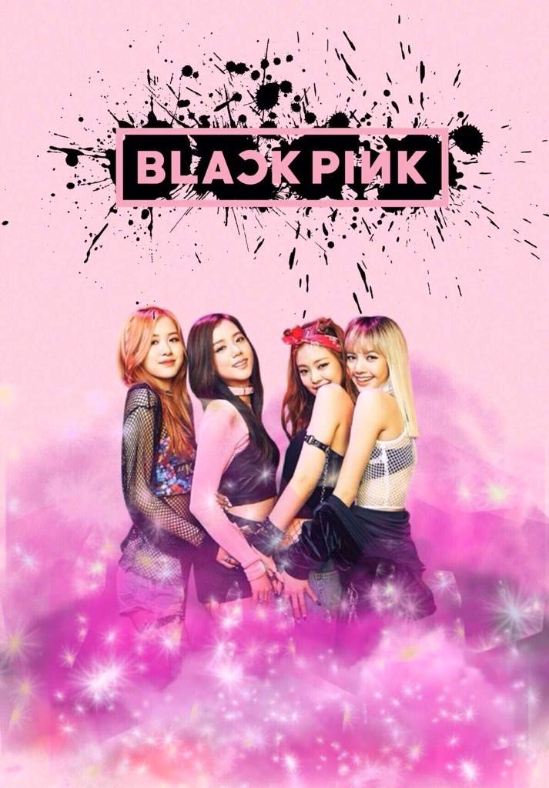
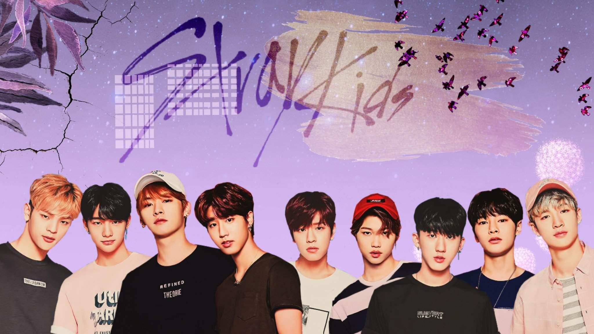

BTS

BTS, also known as the Bangtan Boys, is a seven-member South Korean boy band that began formation in 2010 and debuted in 2013 under Big Hit Entertainment. The septet—composed of RM, Jin, Suga, J-Hope, Jimin, V, and Jungkook— co-writes and co-produces much of their own output
BLACKPINK
Blackpink is a South Korean girl group formed by YG Entertainment, consisting of members Jisoo, Jennie, Rosé, and Lisa They are also the first music group and Korean act to have three music videos each accumulate one billion views on YouTube.
STRAYKIDS
Stray Kids a South Korean boy group under JYP Entertainment. The group currently consists of Bang Chan, Lee Know, Changbin, Hyunjin, Han, Felix, Seungmin, and I.N. Woojin left the group on October 27th, 2019. Stray Kids was created through the survival program with the same name, Stray Kids. Stray Kids debuted on March 25, 2018.